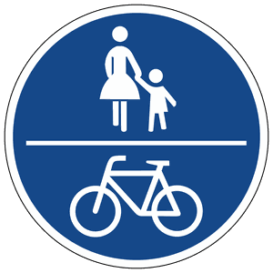

Zeichen 240
Gemeinsamer Geh- und Radweg

31 Tatbestände dazu
141090Sie hielten auf einem Geh- und Radweg (Zeichen <240/241>).
50 €
141091
Sie hielten auf einem Geh- und Radweg (Zeichen <240/241>) und behinderten +) dadurch Andere.
55 €
141154
Sie benutzten als Nichtberechtigter *) <einen Radweg (Zeichen 237)/ einen Reitweg (Zeichen 238)/einen gemeinsamen Geh- und Radweg (Zeichen 240)/einen getrennten Rad- und Gehweg (Zeichen 241)/eine Fahrradstraße (Zeichen 244.1)/eine Fahrradzone (Zeichen 244.3)>.
15 €
141155
Sie benutzten als Nichtberechtigter *) <einen Radweg (Zeichen 237)/ einen Reitweg (Zeichen 238)/einen gemeinsamen Geh- und Radweg (Zeichen 240)/einen getrennten Rad- und Gehweg (Zeichen 241)/eine Fahrradstraße (Zeichen 244.1)/eine Fahrradzone (Zeichen 244.3)> und behinderten +) dadurch Andere.
20 €
141156
Sie benutzten als Nichtberechtigter *) <einen Radweg (Zeichen 237)/ einen Reitweg (Zeichen 238)/einen gemeinsamen Geh- und Radweg (Zeichen 240)/einen getrennten Rad- und Gehweg (Zeichen 241)/eine Fahrradstraße (Zeichen 244.1)/eine Fahrradzone (Zeichen 244.3)> und gefährdeten +) dadurch Andere.
25 €
141157
Sie benutzten als Nichtberechtigter *) <einen Radweg (Zeichen 237)/ einen Reitweg (Zeichen 238)/einen gemeinsamen Geh- und Radweg (Zeichen 240)/einen getrennten Rad- und Gehweg (Zeichen 241)/eine Fahrradstraße (Zeichen 244.1)/eine Fahrradzone (Zeichen 244.3)>. Es kam zum Unfall.
30 €
141158
Sie befuhren mit einem Kraftfahrzeug bis 3,5 t zulässiger Gesamtmasse mit Anhänger oder einem Kraftomnibus den <Gehweg/gemeinsamen Geh- und Radweg/Gehweg eines getrennten Rad- und Gehwegs/Bereich einer Fußgängerzone>, obwohl dieser für Sie durch Zeichen <239/240/241/ 242.1> gesperrt war.
55 €
141159
Sie hielten mit einem Kraftfahrzeug bis 3,5 t zulässiger Gesamtmasse mit Anhänger oder einem Kraftomnibus <auf dem Gehweg/auf dem gemeinsamen Geh- und Radweg/auf dem Gehweg eines getrennten Rad- und Gehwegs/im Bereich einer Fußgängerzone>, obwohl dieser für Sie durch Zeichen <239/240/241/242.1> gesperrt war.
55 €
141163
Sie befuhren mit einem Kraftfahrzeug den <Gehweg/gemeinsamen Geh- und Radweg/Gehweg eines getrennten Rad- und Gehwegs/Bereich einer Fußgängerzone>, obwohl dieser für Sie durch Zeichen <239/240/241/ 242.1> gesperrt war.
50 €
141166
Sie hielten mit einem Kraftfahrzeug <auf dem Gehweg/auf dem gemeinsamen Geh- und Radweg/auf dem Gehweg eines getrennten Rad- und Gehwegs/im Bereich einer Fußgängerzone>, obwohl dieser für Sie durch Zeichen <239/240/241/242.1> gesperrt war.
50 €
141184
Sie parkten <auf dem Gehweg/auf dem gemeinsamen Geh- und Radweg/ auf dem Gehweg eines getrennten Rad- und Gehwegs/im Bereich einer Fußgängerzone>, der durch Zeichen <239/240/241/242.1> gesperrt war.
55 €
141194
Sie parkten auf einem Geh- und Radweg (Zeichen <240/241>).
55 €
141198
Sie passten auf einem <gemeinsamen Geh- und Radweg (Zeichen 240)/ getrennten Rad- und Gehweg (Zeichen 241)> mit zugelassenem Fahrzeugverkehr Ihre Geschwindigkeit nicht dem Fußgänger- bzw. dem Radverkehr an.
15 €
141446
Sie benutzten nicht den vorhandenen Radweg (Zeichen <237/240/241>), obwohl dieser für Ihre Fahrtrichtung gekennzeichnet war.
20 €
141447
Sie benutzten nicht den vorhandenen Radweg (Zeichen <237/240/241>), obwohl dieser für Ihre Fahrtrichtung gekennzeichnet war, und behinderten +) dadurch Andere.
25 €
141448
Sie benutzten nicht den vorhandenen Radweg (Zeichen <237/240/241>), obwohl dieser für Ihre Fahrtrichtung gekennzeichnet war, und gefährdeten +) dadurch Andere.
30 €
141449
Sie benutzten nicht den vorhandenen Radweg (Zeichen <237/240/241>), obwohl dieser für Ihre Fahrtrichtung gekennzeichnet war. Es kam zum Unfall.
35 €
141592
Sie hielten auf einem Geh- und Radweg (Zeichen <240/241>) und gefährdeten +) dadurch Andere.
70 €
141593
Sie hielten auf einem Geh- und Radweg (Zeichen <240/241>). Es kam zum Unfall.
90 €
141736
Sie befuhren mit einem Kraftfahrzeug über 3,5 t zul. Gesamtmasse (ausgenommen PKW und KOM) den <Gehweg/gemeinsamen Geh- und Radweg/ Gehweg des getrennten Rad- und Gehwegs/Bereich einer Fußgängerzone>, obwohl dieser für Sie durch Zeichen <239/240/241/242.1> gesperrt war.
100 €
141737
Sie hielten mit einem Kraftfahrzeug über 3,5 t zul. Gesamtmasse (ausgenommen PKW und KOM) <auf dem Gehweg/auf dem gemeinsamen Geh- und Radweg/auf dem Gehweg des getrennten Rad- und Gehwegs/im Bereich einer Fußgängerzone>, obwohl dieser für Sie durch Zeichen <239/240/241/242.1> gesperrt war.
100 €
141785
Sie parkten <auf dem Gehweg/auf dem gemeinsamen Geh- und Radweg/ auf dem Gehweg eines getrennten Rad- und Gehwegs/im Bereich einer Fußgängerzone>, der durch Zeichen <239/240/241/242.1> gesperrt war und behinderten +) dadurch Andere.
70 €
141786
Sie parkten länger als 3 Stunden <auf dem Gehweg/auf dem gemeinsamen Geh- und Radweg/auf dem Gehweg eines getrennten Rad- und Gehwegs/ im Bereich einer Fußgängerzone> der durch Zeichen 239/240/241/ 242.1 **) gesperrt war.
70 €
141795
Sie parkten auf einem Geh- und Radweg (Zeichen <240/241>) und behinderten +) dadurch Andere.
70 €1 PunktB-Verstoß
141796
Sie parkten länger als 1 Stunde auf einem Geh- und Radweg (Zeichen <240/241>).
70 €1 PunktB-Verstoß
141797
Sie parkten länger als 1 Stunde auf einem Geh- und Radweg (Zeichen <240/241>) und behinderten +) dadurch Andere.
80 €1 PunktB-Verstoß
141798
Sie parkten auf einem Geh- und Radweg (Zeichen <240/241>) und gefährdeten +) dadurch Andere.
80 €1 PunktB-Verstoß
141799
Sie parkten auf einem Geh- und Radweg (Zeichen <240/241>). Es kam zum Unfall.
100 €1 PunktB-Verstoß
611024
Sie befuhren mit dem Elektrokleinstfahrzeug einen gemeinsamen Geh- und Radweg (Zeichen 240) und behinderten +) einen Fußgänger.
15 €
611025
Sie befuhren mit dem Elektrokleinstfahrzeug einen gemeinsamen Geh- und Radweg (Zeichen 240) und gefährdeten +) einen Fußgänger.
20 €
611026
Sie befuhren mit dem Elektrokleinstfahrzeug einen gemeinsamen Geh- und Radweg (Zeichen 240). Es kam zum Unfall.
25 €